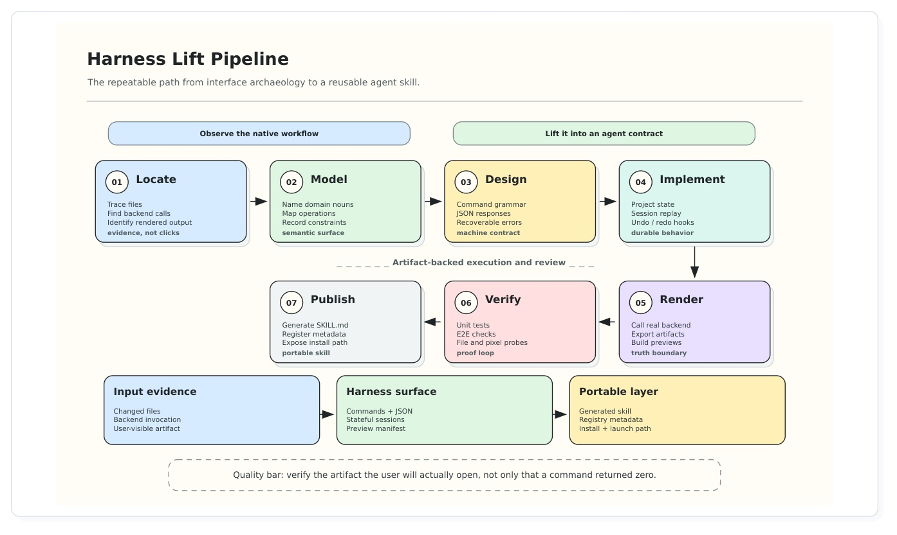

把 GUI 軟體 lift 成 agent-native、可驗證的 command contract
Selected from GitHub Trending: HKUDS/CLI-Anything. This is a technical report, not a peer-reviewed acceptance claim.
不要教 agent 模仿人類點擊；把軟體既有的 state、backend、artifact 變成可呼叫、可檢查、可重播的 contract。
GUI 保留給人類與 fallback；default control plane 改成 stateful CLI harness。

如果 checker 能在某個 file / package boundary 證明 truth，
builder 就該在同一 boundary 建構與 export。
Verification is not the last step; it reveals the right execution boundary.
Bundle: manifest.json, summary.json, artifacts/; live workflows add session.json and trajectory.json.
.blend-cli.json as inspectable working state.Reported current Blender harness surface. 53 commands are public; one monitor command is hidden.
| Mode | Where state lives | Harness move | Native authority |
|---|---|---|---|
| Blender | scene DB + bpy + renderers | external stateful adapter | Blender process / native render |
| Slay the Spire II | live game + screens + frame loop | in-process bridge + thin CLI | Godot / MegaCrit runtime |
| Signal | Value | Source |
|---|---|---|
| Generated / curated harness CLIs | 65 | registry.json |
| Public third-party CLIs | 18 | public_registry.json |
| Combined CLI entries | 83 | both registries |
| Combined categories | 32 | both registries |
| Companion skills / preview integrations | 61 / 5 | report snapshot |
These are repository / production snapshot numbers reported by the authors, not controlled benchmark scores.
Semantic verbs collapse many accidental pixel traces into one stable, compositional action space.
The bridge absorbs cursor paths, timing, frame ownership, and UI specifics; the agent plans over state + legal actions.
If the artifact can be inspected programmatically, then in many cases it can also be constructed programmatically.
如果成品可以被程式檢查，那麼很多情況下也能透過程式建構。
This is the report’s strongest design thesis: validation exposes the right construction boundary.
The workspace for agents becomes a state graph with executable transitions and inspectable history.
對 agent 而言，工作區變成具有可執行轉移與可檢查歷史的狀態圖。
Expose state. Preserve backend truth. Verify the artifact. Make the contract discoverable.